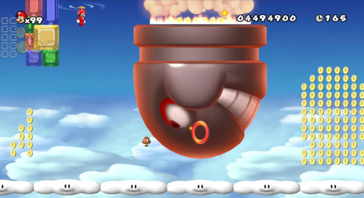
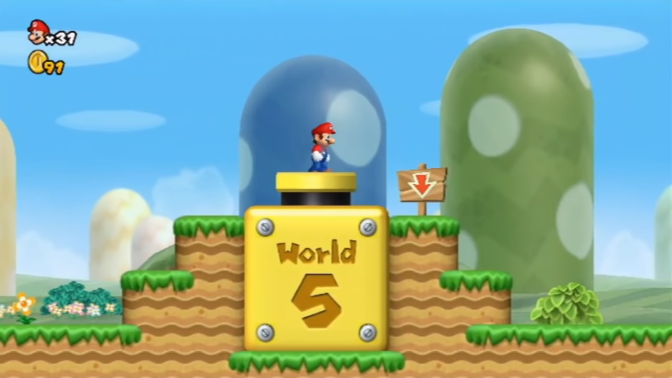

Secrets
Monde 9

Après avoir terminé le dernier niveau du monde 8, le joueur débloque alors le monde 9. Les niveaux qui y sont présents doivent être débloqués par les pièces étoilées situées dans chaque niveau.
Canons

Il est possible de progresser plus vite dans le jeu : en effet, dans certains défis existent des sorties secrètes qui, sur la carte, activent un canon permettant d'accéder à un autre monde sans passer par la grande forteresse. Cependant le joueur n'est pas obligé d'emprunter le canon et, s'il le souhaite, il peut continuer l'aventure normalement.